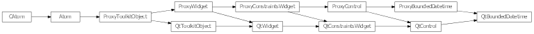

Bases: enaml.widgets.control.Control
A base class for use with widgets that edit a Python datetime.datetime object bounded between minimum and maximum values. This class is not meant to be used directly.
The minimum datetime available in the datetime edit. If not defined then the default value is midnight September 14, 1752.
The maximum datetime available in the datetime edit. If not defined then the default value is the second before midnight December 31, 7999.
The currently selected date. Default is datetime.now(). The value is bounded between minimum and maximum.
A reference to the ProxyBoundedDatetime object.

Bases: enaml.qt.qt_control.QtControl, enaml.widgets.bounded_datetime.ProxyBoundedDatetime
A base class for implementing Qt Enaml datetime widgets.
Return the current datetime in the control.
| Returns: | result (datetime) – The current control datetime as a datetime object. |
|---|
Set the widget’s minimum datetime.
| Parameters: | datetime (datetime) – The datetime object to use for setting the minimum datetime. |
|---|